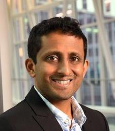

Chand Chandrasekaran
Boston University
John Pearson
Duke University

Tatiana Engel
Princeton University
Chethan Pandarinath
Emory University
Georgia Tech

Alex Cayco Gajic
École Normale Supérieure
| Call for Abstracts | Speakers | Organizers |
Machine learning is playing increasingly important roles in making sense of big neural data and constructing computational models of brain function. Success stories are well-publicized. Limit cases and negative results are only sporadically discussed.
Inspired by recurring I Can't Believe It's Not Better (ICBINB) workshops in the machine learning community, our COSYNE 2024 workshop aims to spark honest and constructive discussions about the limitations of current machine learning tools in the context of neuroscience. We are not affiliated with the broader ICBINB initiative, but endorse their goals "to create and foster a community that goes beyond benchmark climbing ... highlighting the importance of unexpected negative results, questioning well-established default practices, re-evaluating and understanding existing methods... rewarding simplicity over unnecessary complexity."
There has been a rapid proliferation of data-driven models in our community over the past 5-10 years. Quantitative benchmarking is one approach to help navigate this complex ecosystem, but these initiatives often fall short of our scientific ambitions. Indeed, the period of rapid methodological advancement is now giving way to fears of stagnation. This is evident in recent paper titles: "What can 5.17 billion regression fits tell us about artificial models of the human visual system?" and If deep learning is the answer, what is the question?". A workshop at Computational Cognitive Neuroscience (CCN) last summer proposed that the ML-based approach "might be hitting a wall" and asked "are we limited by tools, hypotheses or data?".
We therefore believe there is a strong appetite to have a broad discussion centered around the limitations of ML tools in neuroscience, and how to overcome them. Are there fundamental unknowables? Do we need better benchmarks? Or a different approach entirely?
We invite the community to submit short abstracts on relevant recent results documenting limitations of current tools, unexpected negative results and/or potential new ideas to overcome them. We will invite a small number of contributed talks from these submissions. Submissions from junior researchers are particularly welcome.
Note that speakers must pay for their own travel, hotel costs, and conference registration. Also, please do not submit if you are already committed to speak at a different COSYNE workshop.
To submit, please fill out this google form.
Submission Deadline: Jan 31 2024 (anywhere on earth)
Author Notification: Feb 2 2024
|
Chand Chandrasekaran Boston University |
John Pearson Duke University |
Tatiana Engel Princeton University |
|

Chethan Pandarinath Emory University Georgia Tech |
Alex Cayco Gajic École Normale Supérieure |
|
Alex Williams New York University Flatiron Institute |

Cristina Savin New York University |